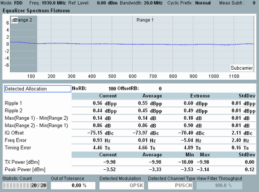

The equalizer spectrum flatness is determined for the post FFT equalization step, as specified in the standard. It reflects the spectrum flatness of the equalizer.
The results are displayed in a diagram and as a table of statistical results.

The diagram shows the power of the equalizer coefficients for all allocated subcarriers of the measured slot. The measured slot is located in the configured "Measure Subframe". Only a single carrier is analyzed. For signals with carrier aggregation, you can select which carrier is measured (setting "Measurement Carrier").
The results are normalized to the arithmetic mean value of all results. Hence the measured curve is centered on the 0 dB line.
The table below the diagram presents statistical values. The first four values are related to the spectrum flatness limits. They indicate the difference between maximum and minimum values within range 1 ("Ripple 1"), within range 2 ("Ripple 2") and between the ranges. For details, see "Equalizer Spectrum Flatness Limits".
For the other results in the table, see "View TX Measurement and BLER".
For the parameters at the bottom, see "Common View Elements".
For query of the diagram contents and of the first four table rows, see "Equalizer Spectrum Flatness Results".